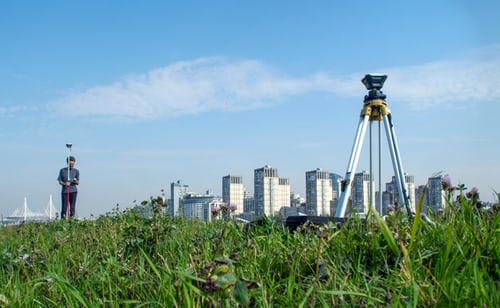
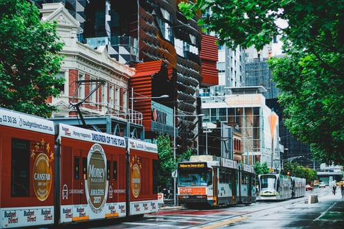
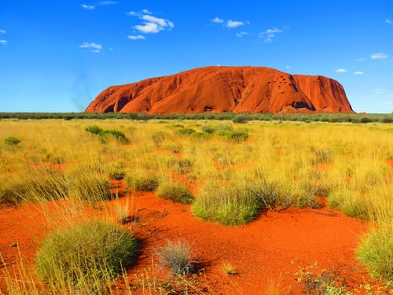
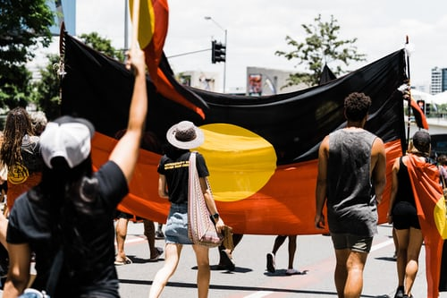
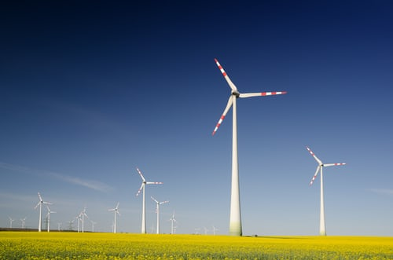

Why did I go into Geospatial Science?
I decided to do a Bachelor of Science (Geospatial Science) (Honours) because I found enjoyment
and passion in Geography, Mathematics, and Visual Communications back in high school. Throughout
university, I found a love for sustainability and protecting Indigenous Cultural sites. Remote sensing
was a subject that I found most intriguing as I have decided to do my major project on 3D data capture
of culturally and historically significant sites with a low-cost sensor (iPad LiDAR).


I began my GeoSpatial journey in February in 2017. Currently I am in my 5th year of my degree with the expectation of graduating after semester 1 in 2022. This course has provided me the basics of what GeoSpatial has to offer as well as supporting me throughout my career path.

My honours project is a demonstration task to see if low-cost sensors can scan culturally and historically significant sites and if it is feasible for industry base projects. I am using an iPad LiDAR (depth) sensor and produce the results on a free app that is avaliable for all users. An assessment on the cost, effectiveness, time etc will be done once all scans have been completed to determine the outcome.
After my first year at University, I joined an Indigneous Internship Program called CareerTrackers who helped me secure an internship with the Spatial team (now known as the Digital Solutions team) at Jacobs Group in Melbourne. Each summer after that I have continued my relationship with Jacobs and now I a range of experience with 6 areas across Jacobs Group.

My Aboriginal mob is from Ballardong, Noongar which is located 2 hours east of Perth in Western Australia. However, I was born and raised on Wurundjeri Country and have been studying, living and work here as well. Ngarara Willim Centre and CareerTrackers have given many opportunities to work within the Industry and with many Land Councils. Thanks to them, I have been able to gain valuable experience as professional and leader.

I have a deep passion for sustainability, future population growth, renewable energy, and indigneous people/land. I work in an industry that will allow me to pursue my passion in a way that I believe will impact the environment and people positively.
text